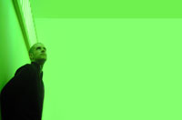

Richard Chartier
LINE / RASTER-NOTON / 12K
http://www.3particles.com
Richard Chartier (b.1971), sound and installation artist, is considered one of the key figures in the current of reductionist electronic sound art which has been termed both "microsound" and Neo-Modernist. Chartier's minimalist digital work explores the inter-relationships between the spatial nature of sound, silence, focus, perception and the act of listening itself. Chartier’'s sound works/installations have been presented in galleries and museums internationally and he has performed his work live across Europe, Japan, Australia, and North America at digital art/electronic music festivals and exhibits. In 2000 he formed the recording label LINE and has since curated its continuing documentation of compositional and installation work by international sound artists/composers exploring the aesthetics of contemporary and digital minimalism. In 2010 he was awarded a Smithsonian Artist Research Fellowship.
Richard Chartier (often mixing under the pseudonym Pinkcourtesyphone) began DJing in 1991, in the heyday of techno.
As a DJ he is best known for his nights FILLER (2001-2003), Mies (2004-2005), and Procedure (2005-) in Washington, DC as well as the Treatment (2002-2003) monthly event at Sonar in Baltimore. His special Proto-Synthesis night sprinkled throughout 2000-2003 was a precursor to the renewed interest in Cold Wave and 1977-1983 electronic music. He was proud to DJ at the fateful last night of BUZZ in DC before it was shut down. He has DJed internationally including at Sonar Festival (Spain), Glade Festival (UK) and ElectroFringe (Australia).
His sets can be an eclectic mix, ranging from mid-20th century analog-ica to tech-house to ambient soundscapes to contemporary avant garde electronica. Textures, rhythms and noise non-chalantly mixed into a flowing soundtrack for you and your cocktail.